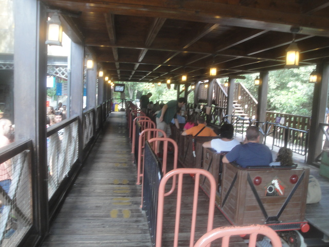

| |
Virtual Express Review

We're here at Tibidabo to ride Virtual Express. It's called that because they added the VR headsets to the ride. While I do believe that it's probably a better fit on a ride like this as it makes more sense to add VR on rides that are fairly tame otherwise, rather than an already thrilling ride where you don't need graphics. But since I have no idea what the VR program is and rode it before it had VR, this review of it will be withut the VR. You get in the cars and off you go. You sort of launch. It's not really a launch, the ride is just starting, and it starts at a faster pace than most rides. We never lose this speed because this is a powered coaster, and powered coasters DO NOT COUNT!!! So yeah. The ride for now is mostly just kind of wavy straight track. OK, it's not straight track since it's sort of a bunch of S Curves. But yeah. It functions pretty much in the same way as straight track. We then get to TAKE THE TUNNEL!!! Hey, VR people! You just took a tunnel! But you don't get to scream that because you've got a screen on your face! =P We then go around a turn, head out into the light, and continue again. We then head over a tiny little hill. Wow, I think this is the first time on the ride there's been any elevation change. Even for a powered coaster, that's kind of sad. We go through a couple more S Curves, as well as heading up a small bump. We go through more S Curves, and actually, since we're accelerating, we get some laterals. So that's fun. We then head around another turn, slow down, around another turn, and back into the station for another round. I know I was really dissapointed with this ride as I expected something far more exciting. This ride, it's almost like a car ride, only faster since its a powered coaster. I'm sorry. But this thing is practically flat. Kiddy coasters are bigger than this ride. I really wouldn't reccomend it simply for that reason. But who knows. Maybe it's better with the VR.
3/10
Location: Tibidabo
Opened: 2003
Built by: Mack
Last Ridden: August 14, 2015
Virtual Express Photos

Home
|